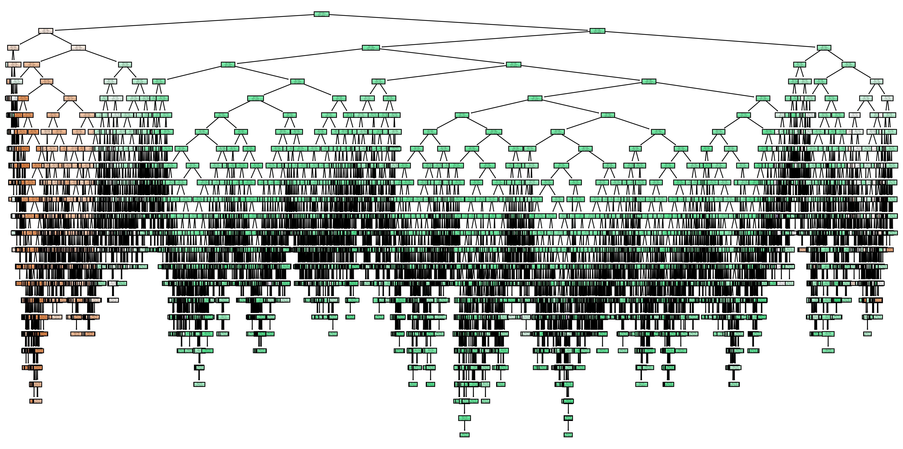

Project Purpose
Automatically create the best itinerary for your Disney park of choice depending on wait times, popular times, your start time, and party size. The goal of this project is to create a Smart Park Planner that helps visitors to Disney parks optimize their schedules based on predicted wait times, visitor flow patterns, and personalized preferences. This project focuses on Disneyland and Disney California Adventure in Anaheim, CA, USA.
Wait Times At Disneyland and Disney California Adventure Park
It's evident that there are peak seasons at these popular theme parks throughout the year, as shown by the heatmaps below (select to view a specific park). We see spikes in wait times in March (likely Spring Break), in July, October, and during the holidays in the wintertime. However, if you are to attend one of these parks either in a time you know may be crowded or when you think it may be relatively clear, it is important to know which rides will have the longest wait times so that you can make the most out of your day and squeeze the maximum amount of rides out of your ticket purchase.
Temperature at Disneyland and Disney California Adventure
Temperatures in southern California are known to be temperate, and sunny almost all year round. However, there are always colder days, rainy seasons, and particularly hot months. If you are looking for the perfect weather for your trip, you can use our Random Forest Regressor Model to predict the average temperature for the day of your visit. In this graph, you can see our model predicting the temperature using various inputs (minimum and maximum temperature for the day and date) in order to predict the average temperature. Our Weather Model has an R2 value or .98, meaning that it has an extremely high accuracy. If you are curious about how this model was made, please refer to our GitHub repo, which is linked at the bottom of this webpage.
Predicting High, Moderate, and Low Traffic at Disney California Adventure
While you may know that a particular day (Saturday, for example) may be the busiest overall day at these parks, it is still important to figure out which areas of the park are going to be more or less crowded. This Random Forest Classifier Model splits rides into Low (Less than 15 minutes wait), Moderate (15-45 minutes wait), or High Traffic Areas (more than 45 mintues wait). This model has an accuracy of .72, which is relatively strong. Here, you can see our decision tree and how the model is able to predict high, moderate, and low wait times depending on the different features within the data. We also display our confusion matrix which demonstrates how well our model is at predicting wait time classifications. Limitations for the predictive power of this model were the amount of time we had to build the model, and access to the right data to train the model. If you are curious about how this model was made, please refer to our GitHub repo, which is linked at the bottom of this webpage.

Predicting Ride Wait Times at Disneyland and Disney California Adventure
In this project, we used a Random Forest Regressor Model to predict wait times for the rides at both of these parks. This model has an accuracy of .89, which is a strong model. The random forest regressor model allowed us to achieve greater accuracy than a linear or logistic regression model, and was a great solution for the problem we are trying to solve. Since theme park ride wait times fluctuate significantly throughout the day and year without a linear pattern, we needed to turn to the random forest regressor instead. If you are curious about how this model was made, please refer to our GitHub repo, which is linked at the bottom of this webpage.
Interactive Leaflet Map
You can view all the rides, restaurants, and shows that both Disneyland and Disney California Adventure Park offers in this interactive Leaflet Map. Hover over each marker to view information about the attraction.
Data Sources and Code Sources
Please refer to our group repo found here for all our data sources, code sources, project plan, and completed files.